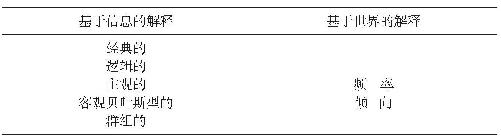

一本关于怎样理解概率的书听起来也许不会那么有意思；事实上，如果你对数学不感兴趣，这样一本书也可能 不会让你觉得有什么意思。然而，如果不懂概率的话，你可能 会发现自己会做出一些坏的决定。（如果我告诉你，我在上学的时候就曾经从那些应该足够了解概率、但实际并非如此的人那里赚了很多钱，这样说有可能引起你的兴趣吗？关于这一点，我们会在第三章进行更多讨论。）有时候你会在不该采取行动的时候采取了行动，而在应该采取行动的时候却反而无动于衷。不要轻易相信我说的话。下面就让我们来看一看日常生活中那些涉及概率的场景吧。
中译本边码：1
假想你非常想去爬一座山，你查了当天的天气预报，说那里的降水概率（或者下雨的机会 ）只有二十分之一，或者说，百分之五。你该不该带上雨衣呢？
显然，回答这个问题要考虑和语境的关联，让我们来看一看其中的关联有哪些。假如你根本就没有雨衣，而且要想找到雨衣还有些困难，但你却不想被雨淋湿。总之，你认为被雨淋湿比费事去找雨衣会更让人不愉快。当然，理想的情况是：你既不用带雨衣，也 不会被雨淋湿。为了让这里的讨论更加精确，我们可以给每种可能的结果指派一个数值，也就是一个效用 （utility）。不过，为了避免把问题不必要地复杂化，我们可以按照你的偏好的次序，给四种可能的结果进行如下排序：没带雨衣且没下雨（最好），带了雨衣且下雨（次好），带了雨衣但没下雨（第三好），没带雨衣但下雨了（最坏）。（在这样的场景当中，考虑一下是不是假定了一些还没有被明确提出的事情，总是会有好处的。在这里我想提醒大家：读这本书的同时，应该自始至终坚持去做这样一件事。例如，在当下场景中，“带了雨衣且下雨”比“带了雨衣但没下雨”的排序更靠前，因为我觉得：如果你带了雨衣但却没下雨，你会感到有些郁闷；你可能会想：“我本就不该费事带着这个东西的！”也许在描述这个语境的时候，我本来就应该补充这一点，让它作为一项规定。）
中译本边码：2
这样一个偏好次序让这样一个假设场景中什么东西关乎成败变得更加清楚。如果你带了雨衣，那么，你就错失了得到最佳的可能结果的机会。但是，这也会让你避免遭受最坏的可能结果（而且还有可能得到次好或第三好的结果）。现在看来，如果这个偏好次序就是你所把握到的全部信息，那么，你的选择可能就仅仅依赖于你在对待风险时持有什么样的态度了；比较而言，有的人更乐意选择规避风险 。但你也知道，不下雨的可能性要比下雨的可能性更大，这可能会影响到你的决策。实际上，我们马上就会看到，如果“更大的可能”可以通过一些更容易把握的方式进行解释的话 ，这的确会影响到你的决策。大致来说，我们可能已经明白了：为什么说概率通常会被用来测量各种不同的可能性的显著程度。
虽然给出了上面这样的解释，但也许对于概率的重要性，你仍然不够确信。如果是这样的话，我想请你想象一下：假如你没能根据其显著程度给各种可能性进行排序，这样的话，你会觉得所有的可能性都是同等重要的。一颗流星落到你头上的可能性，或者你和一个持刀的精神病患者邂逅的可能性，将会被你认为与被雨淋湿的可能性同样大。你将会为是不是要戴上一顶安全帽、是不是要穿上一件防弹衣等事情而忧心忡忡。事实上，稍加想象就会发现，你会因为这么多可能的命运而感到惴惴不安，以至于深感沮丧和困惑。（当然，毫无作为同样可能是一种坏的选择。但是，即使你闭门家中坐，你也有可能死于一场地震。如此等等！）唯一的好的一面是：除了那些坏的可能性，你还能考虑很多好的可能性；既能考虑到意外发现一批深埋于地下的钻石的可能性，也能考虑到遇见终身伴侣的可能性，如此等等。但是，说真的，除了猜想做什么才是最好的，你根本就没有办法去明确做什么才是最好的。生活就是由一系列这样的猜想组成的。然而，我们大多数人并不这样看待生活，因为我们会认为，如果有谁一直戴着一顶安全帽，他一定是疯了。
中译本边码：3
然而，这仍然留给我们一个问题，那就是：我们能够并且也应该理解关于概率的各种讨论所反映的东西是什么？这正是本书所关注的主要问题。探究这个问题的答案的一种方式如下：我们如何可能把一个形如“香港今天下雨的概率是50％”的断定，令人满意地翻译 成一个不需要提到概率的描述性 断定呢？（请注意我所使用的“描述性”一词。我并不希望这个断定仅仅 是一个关于某人应该如何采取行动的陈述句。我们希望这样一个断定能够通过一种特定的方式为人们的行动提供好的理由 。）这样的一个陈述是否应该 用于指导某人的行动——而且，如果是这样，会采取哪些行动——这取决于我们是如何做出这个陈述的。
我们会在下面谈到这个问题。但是请大家注意：如果你不认真思考关于概率的陈述，你会很容易忽略其中所涉及的各种小把戏和微妙的东西。例如，再来考虑一下我们上面提到的要不要带雨衣的场景。你知道你想要爬的那座山所在的地区的降水概率是5％，但你只希望去爬那个地区的一座山。那么，你打算爬的那座山 （或者更准确地说，在你打算攀爬的那条路线上）降雨的概率会有可能不是5％吗？这个概率可能会更低一些，还是更高一些呢？在继续阅读之前，你有没有考虑过这些呢？
让我们来想象这样一个场景：我从口袋里拿出了一枚普通的硬币。当我把它抛起来让它自由落体的时候，你觉得我得到硬币“正面”朝上这一结果的概率是多少呢？我已经在很多场合问过学生这个问题了。下面的对话表明了这样一种讨论是怎么进行的——这是一种最好的讨论方式！
中译本边码：4
达瑞： 当我抛起这枚硬币的时候，正面朝上落地的概率会是多少？
学生甲： 这个概率是50％。
达瑞： 其他人有不同意见吗？
学生乙： 我觉得我们并不知道 这个概率是多少。
达瑞： 真的吗？为什么会是这样呢？
学生乙： 我们需要做实验来评估一下这个概率值。
达瑞： 这样的话，你要对甲说些什么呢？
学生乙： 这枚硬币——或者你把它抛起来——可能是不均匀的。我们不知道情况是不是这样。因此我们不得不做实验来搞清楚它是不是这样的，而且，假如情况真是这样，就要搞清楚偏差的程度有多大。
达瑞： 好。也就是说，你认为如果我重复抛起这枚硬币，并记下它落下时正面朝上的频率 ，我们就能较好地评估一次抛掷硬币得到正面朝上的概率，是这样吗？
学生乙： 是的，没错。
达瑞： 也就是说，你觉得，如果通过某种魔法我们一直持续这个过程的话，实际 的概率肯定会明确地显示出来。如果我们抛掷这枚硬币无限多次，并记下每一次的结果，就会从中得出实际的 概率，对吗？
学生乙： 是的，我就是这么想的。
达瑞： 好吧。甲，对于乙说的这些，你怎么回应呢？
学生甲： 哦，这枚硬币也许的确是不均匀的……
达瑞： ……你的意思是，我抛掷这枚硬币的过程也许最终得到一面朝上的频率会比另一面的频率更高？
学生甲： 我们当然可以这样理解。但是，即使我们想象这枚硬币是不均匀的，我们也不知道它是怎样 不均匀的。因此，得出下面这个结论似乎是正确的：基于我们所知道的信息 只能推断出，结果是正面朝上的概率和结果是反面朝上的概率是一样的。
达瑞： 这就是说，你觉得确实存在着不一样的地方。乙，如果我的看法是错误的，请你纠正，但是按照你的观点，如果把这枚硬币换成另一枚，这个概率可能会不一样吗？换句话说，会是因为实验配置上的改变而导致不一样吗？
中译本边码：5
学生乙： 是的。
达瑞： 但是，甲，按照你的看法，即使我换一枚硬币，概率也会保持相同，是吗？
学生甲： 是这样的。嗯……如果你不告诉我，或者我不知道更多关于这枚硬币的情况，那么情况就是这样的。
达瑞： 好了。你是说，要想准确回答一个和我们正在讨论的关于“概率是什么？”相类似的问题，需要考虑所能掌握的信息有哪些，是吗？
学生甲： 是的。如果你只告诉我你有一枚有两个面的硬币，那么我所知道的全部事情就是，当你抛起它并让它自由落体的时候，就会出现两种可能的结果。
达瑞： 于是你的结论就是，得到其中一种可能结果的概率与另一种相同，是这样吗？
学生甲： 是的。
达瑞： 为什么会是这样呢？
学生甲： 根据我所掌握的信息，我们没办法在这两种可能的结果之间做出选择。每一种可能结果都与另外一种结果同样“鲜活”。
达瑞： 好的。甲的观点我称之为基于信息（ information-based）的观点，而乙的观点我称之为基于世界 （world-based）的观点。通常来看，这些已经被赋予了不同的名称——例如，认知的 和客观的 ，或者认知的 和偶然的 ——但我认为这些名称会让人感到更加困惑。
总而言之，我们有可能通过两种主要的方式来解释关于概率的讨论；或者把它说成是关于世界的事情（基于世界的 ），或者把它说成是依赖于人的信息状态（基于信息的 ）。也许你会觉得这些定义有点含糊，但它们本来就是这样的。事实上，在这两类关于概率的讨论的解释之间存在着很多更具体的差别。我们会在整本书中对这些解释进行考察，而且我会在本章末尾列出这些解释的一个清单。不过，眼下还是让我们只考虑上面的对话怎样继续进行下去吧。让我们考虑一下我们怎样才能开始去论证这一点：概率应该被理解为基于世界的还是基于信息的。
学生乙： 等一下。我有个问题要问甲。
中译本边码：6
达瑞： 问吧。
学生乙： 为什么你不考虑这枚硬币侧面着地这种可能性呢？
学生甲： 这是个好问题。因为我假设我对相似的硬币的表现已经有所认识了。
学生乙： 那么，我们难道就不能说你已经认识到 了相似的硬币是均匀的吗？或者如达瑞所说，当硬币被抛起的时候，从长远来看，正面朝上落地的频率将是50％吗？
学生甲： 我并不觉得我已经认识到了这一点！
达瑞： 甲，你只能说，你掌握了从经验中学到的某种信息 ，并把这种信息用于缩小可能性的范围。实际上，我猜想你也已经假定了当硬币被抛起后它将会落地？
学生甲： 当然！
达瑞： 正确。你掌握了你所拥有的全部相关信息——有些来自你自己先前的经验——而且你也想到了这些相关信息怎样才能同当前的问题建立起关联。你关心的问题是：这些信息 是否与下述断定有某种关系：“当达瑞抛起这枚硬币后，它落地时会正面朝上。”
学生甲： 是的。如果除了由此而产生的可能结果之外，我并没有关于抛掷硬币的其他信息，那么我会分别给“正面”“反面”和“侧面”以相同的概率。
学生乙： 我明白了。看来，甲要做的并不是去考虑这枚硬币是否均匀，而是要告知她所把握的信息——或许是她所掌握的知识——在何种程度上表明了“这枚硬币被抛起之后正面朝上落地”为真。
达瑞： 太好了。看得出来，这堂课会非常棒！
基于上面这些对话，你也许得到了这样一个印象：在基于世界的观点和基于信息的观点之间做出选择，会是一件很困难的事，因为两个学生都有各自合理的视角。这是一个好的印象。因为尽管你会发现关于这一点的争论已经持续了相当 长的时间，但在学术界，关于哪个观点是正确的，本就众说纷纭。
中译本边码：7
但是，关于概率的讨论难道只有这样一种考察方式吗？为了回答这个问题，让我们把前面的对话继续进行下去，并引入一个新的角色——学生丙。
学生丙 ：我认为甲和乙的观点都有其合理成分。然而，这两种观点难道不可能同时成立吗？
达瑞 ：这个问题很好。我们一起来分析一下。对于抛掷硬币的概率，它们有可能都是正确的吗？
学生丙 ：我猜不能。它不可能既是50％又是其他某个值！但是按照甲的观点，它是50％，而按照乙的观点，结果又是其他某个值。
达瑞： 在下面这一点上你的看法是对的，即在任意给定的解释之下，概率不可能同时具有两个值。因此，如果我说“正面朝上的概率是r ”，那么当通过任意具体方式来理解“概率”的时候，r 只能有一个值……
学生丙： 对，这个我明白。但是，或许我们仍然可以通过每一种方式分别去解释“概率”？看来对于硬币正面朝上落地也许会存在两种不同类型的概率？一种是基于世界的，另一种则是基于信息的，它们可以具有不同的值，是这样吗？
达瑞： 当然。关键是保证其中没有矛盾出现，而且要避免语义歧义，所谓语义歧义就是指在同一论证语境中，相同的词被用来指称不同的东西。
学生丙： 因此，要是说量子力学中的概率应该被理解为基于世界的，而抛掷硬币的概率应该被理解为基于信息的，这其中肯定 没有逻辑上的问题吗？
达瑞： 在逻辑上确实没问题。在不同语境中使用概率的不同解释，这没什么问题。实际上，不存在什么逻辑上 的东西能够阻止你在讨论抛掷硬币的情况时仅仅 使用基于世界的观点，而在讨论例如掷骰子的情况时仅仅 使用基于信息的观点。尽管这样做有些奇怪……
学生甲： 这是因为这两种情境是如此相似吗？
中译本边码：8
达瑞： 对。因此，讨论硬币的时候只使用基于世界的观点，而讨论掷骰子的时候只使用基于信息的观点，这样的做法很难令人信服。
学生乙： 但是，如果我们把量子力学和天气预报作对比，可能会有一个很好的理由，从而对每种情况中分别用到的概率去使用单独一种不同的解释吗？
达瑞： 许多提倡多元论 的哲学家——他们认为关于概率的合理解释不止一种——将会回答“是的”。例如，卡尔·波普尔就认为量子力学中的概率是基于世界的，而科学理论的确证中所涉及的概率则是基于信息的。我们会在第十章讨论这两个领域。
学生丙： 如此说来，关于概率的一元论 又是什么样的情况呢？
学生甲： 简单、精致与统一是一元论的特征。事情也许可以很简约地收尾。
达瑞： 是的，也许确实是这样。但我们可能不想为了简单性而牺牲掉解释力。而且，除此之外，也许这个世界真的就是一个复杂的地方？
学生甲 ：我明白你在说什么了；你是说，两个竞争性理论中较为简单的那个也许并不是正确的那一个，或者比较正确的那一个。但是，如若其他情况相同 ，简单性和统一性就应该用在对不同的解释进行选择的时候吧？
达瑞： 也许吧。抽象地进行讨论是很困难的事。后面我们在考察布鲁诺·德·菲奈特（Bruno De Finetti）的具体想法时，再来进一步思考这个问题吧，在基于信息的观点上，他是一个坚定的一元论者 。他努力去解释 为什么基于世界的观点有时候看起来会那么吸引人。我们也可以事先考虑针对一元论的一种经典的论证，这个论证来自皮埃尔·西蒙·拉普拉斯（Pierre Simon Laplace）。
我们已经看到，如果我们问“关于概率唯一 正确的解释是什么”，也许会把人们引入歧途。“在如此这般的语境中，对概率陈述的正确解释是什么？”这个问题也许更加明智。要怎么选，是你自己的事情。
中译本边码：9
但是，你应该怎样进行选择呢？一种方案是利用思想实验。拉普拉斯（下一章我们还会遇到这个人）用了一个著名的例子去论证基于信息的一元论。这里我想给出该论证的一个改进版。
我们来想象一个强大的存在物，一个所谓的“魔鬼”。下面这些表述对它是成立的：
1. 它知道有关我们的宇宙初始状态的所有事情——它知道从一开始就存在的所有东西，因而知道它们的所有属性。
2. 它知道我们的宇宙当中所有的基本自然法则，而这些自然法则支配着身在其中的东西的行为表现。
3. 它有能力快速运行任何一种演算，不论这有多么复杂。
4. 它并不是我们的宇宙的组成部分。
现在我们来设想：如果这个魔鬼要预测关于我们的宇宙所要发生的任何事情，它需不需要概率？拉普拉斯的回答是一个干脆的“不”。或者更精确一点，他的结论是：
5.它能够迅速地判定我们的宇宙在任意时空位置的状态。
（拉普拉斯最初的思想实验说的是一个知道它自己所在的宇宙的当前状态的魔鬼。他断定这个魔鬼能够计算出将来和 过去的所有状态。但这却导致了很多问题，而这些问题正好都是我的上述版本能够避开的。）
让我们试着进一步理解这个魔鬼所处的情境。设想有一个极简的宇宙，它只包含两个东西，只服从经典的机械和引力法则。想象只存在两个微小而且不可分隔的（而且完全是固体的）球体，其中一个环绕另一个旋转。即便是我们这种只具有有限智力的生物，只要我们已经知道了两个球体初始的位置、速度和体积（以及上述规律），也能快速地判定这样一个宇宙在任意时空位置的状态。
中译本边码：10
由此拉普拉斯认为，由于我们的无知 ，因而我们是需要概率的。只要我们想象一下在上述极简情况下我们缺少其中一条信息，就会看清楚这一点。比如，我们缺少那个不旋转的球体的初始位置的知识。于是我们就不能精确地预测出在未来任一特定时刻的状态了。然而我们仍然可以使用概率去言说关于这些状态的某些事 情 。
可是，上面这个论证有效吗？如果它的前提都是真的，它的结论就不可能假吗？并非如此，因为还有一个至关重要的隐含假定。（也许还有其他的，但这个尤其重要。）这个假定指的是：基本的自然规律中本就不包含 概率。但是，我们为什么要这样认为呢？为什么我们非要假定 ，对任一给定的初始状态来说，只有一种可能的未来呢？这个宇宙也许本就是非决定论的 ；我们在后面第八章讨论波普尔有关基于世界的概率的倾向（propensity）论时，再来讨论这一点。
值得补充的一点是，有一些物理学领域，如量子力学，在那里我们所掌握的最好的（候选）规律当中确实 已经包含了概率。如此看来，拉普拉斯的思想实验（乃至我的改进版本）并不像初看上去那么完美。
如上所论，关于概率存在着几种不同的解释，而它们可被归入两个主要的范畴：基于世界的和基于信息的。如表1.1所示。
中译本边码：11
表1.1 关于概率的解释的分类

在本书第二章到第六章，我们将逐一考察基于信息的观点。然后再来考察基于世界的观点。在本书倒数第二章，我们将基于对这些解释的把握，考察一些在概率使用过程中出现的谬误、谜题和悖论。在最后一章我们将系统考察概率如何与下述问题相关：我们如何理解在人文科学、自然科学及社会科学领域当中人们对理论所做的选择。